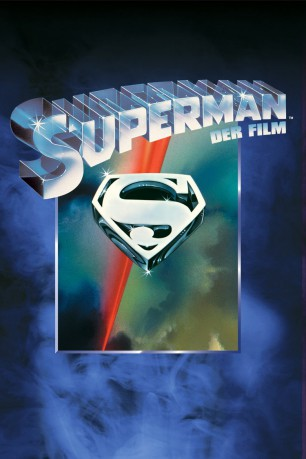
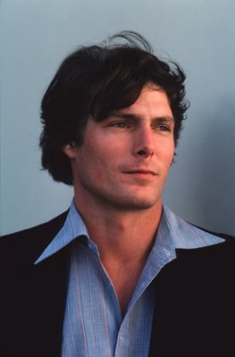
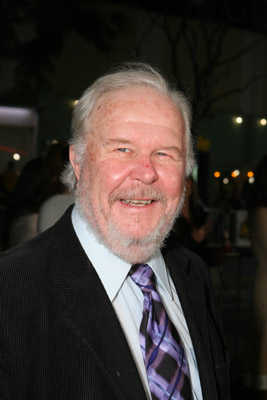
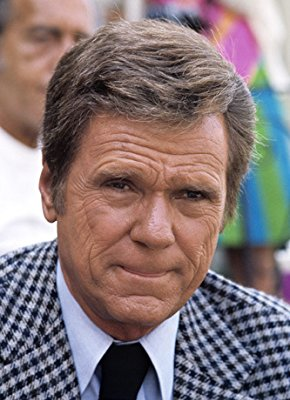
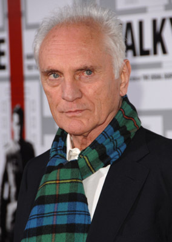
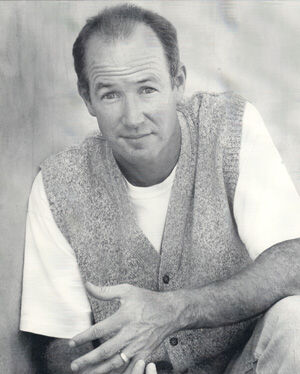
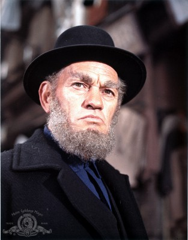
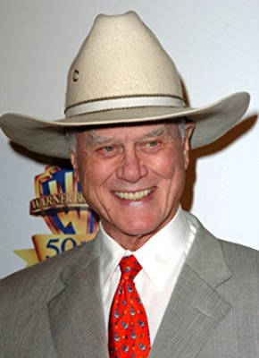
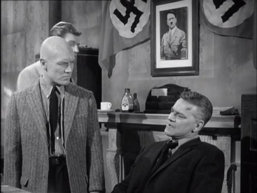

#2373 Superman
Auszeichnungen: 1 Oscars gewonnen für 3 Oscars nominiert 1 BAFTA-Awards gewonnen
 
 IMDB-Wertung: 7.3 / 10
IMDB-Wertung: 7.3 / 10  Metascore: 80
Metascore: 80 
Kurz vor der Zerstörung seines Heimatplaneten Krypton wird der kleine Kal-El von seinen Eltern in einer Raumkapsel Richtung Erde geschickt. Dort findet ihn das Farmerehepaar Kent, das ihm den Namen Clark gibt. Schon früh stellt sich heraus, dass ihr Ziehsohn außergewöhnliche Fähigkeiten besitzt. Erwachsen geworden, arbeitet Clark als unscheinbarer Reporter beim Daily Planet, wo er sich in seine Kollegin Lois Lane verliebt. Die hat jedoch nur Augen für Superman, nicht ahnend, dass der Held und Clark Kent ein und dieselbe Person sind.
Jahr: 1978
Dauer: 143 Minuten
FSK: 12
Land: USA Studio: Warner Bros.Tonspuren: DTS - ,
Untertitel: Deutsch,
Auflösung: 1080p (1920x800) Größe: 9984 MB
Genre: Action, Drama, Sci-Fi
Regisseur:  Richard Donner
Richard Donner
Drehbuch: Jerry Siegel, Joe Shuster, Mario Puzo, Mario Puzo, David Newman
Soundtrack: John Williams
Darsteller:
 Marlon Brando als Jor-El
Marlon Brando als Jor-El Gene Hackman als Lex Luthor
Gene Hackman als Lex Luthor-  Christopher Reeve als Superman / Clark Kent
-  Ned Beatty als Otis
-  Jackie Cooper als Perry White
 Glenn Ford als Pa Kent
Glenn Ford als Pa Kent Trevor Howard als 1st Elder
Trevor Howard als 1st Elder Margot Kidder als Lois Lane
Margot Kidder als Lois Lane- Jack O'Halloran als Non
 Valerie Perrine als Eve Teschmacher
Valerie Perrine als Eve Teschmacher- Maria Schell als Vond-Ah
-  Terence Stamp als General Zod
- Phyllis Thaxter als Ma Kent
- Susannah York als Lara
- Jeff East als Young Clark Kent
-  Marc McClure als Jimmy Olsen
- Sarah Douglas als Ursa
-  Harry Andrews als 2nd Elder
- Diane Sherry Case als Lana Lang
- Larry Lamb als 1st Reporter
- Benjamin Feitelson als 2nd Copy Boy
 Rex Everhart als Desk Sergeant
Rex Everhart als Desk Sergeant David Calder als 3rd Crewman
David Calder als 3rd Crewman- Michael Ensign als Newscaster
-  Larry Hagman als Major
 John Ratzenberger als 1st Controller
John Ratzenberger als 1st Controller- Roy Stevens als Warden
 Richard Donner als Man in Street, extended version , uncredited
Richard Donner als Man in Street, extended version , uncredited- Rob Hawk als Little Boy with Mom , uncredited
- Noel Neill als Ella Lane , uncredited
 Shane Rimmer als Naval Transport Commander , uncredited
Shane Rimmer als Naval Transport Commander , uncredited- Vass Anderson als 3rd Elder
-  John Hollis als 4th Elder
- James Garbutt als 5th Elder
- Michael Gover als 6th Elder
- David Neal als 7th Elder
- William Russell als 8th Elder
- Penelope Lee als 9th Elder
- John Stuart als 10th Elder
- Alan Cullen als 11th Elder
- Lee Quigley als Baby Kal-El
- Aaron Smolinski als Baby Clark Kent
- Jeff Atcheson als Coach
- Brad Flock als Brad
- David Petrou als Team Manager
 Billy J. Mitchell als 1st Editor
Billy J. Mitchell als 1st Editor- Robert Henderson als 2nd Editor
- James Brockington als 2nd Reporter
- John Cassady als 3rd Reporter
- John F. Parker als 4th Reporter
Datei: X:\Comic-Filme\Superman\Superman (1978, FSK12, 1920x800).mkv seit 03.11.2015
Festplatte: Comicverfilmungen+MusikCD
 Es gibt insgesamt 10 Filme in der Gruppe 'Comic-Filme\Superman'
Es gibt insgesamt 10 Filme in der Gruppe 'Comic-Filme\Superman'